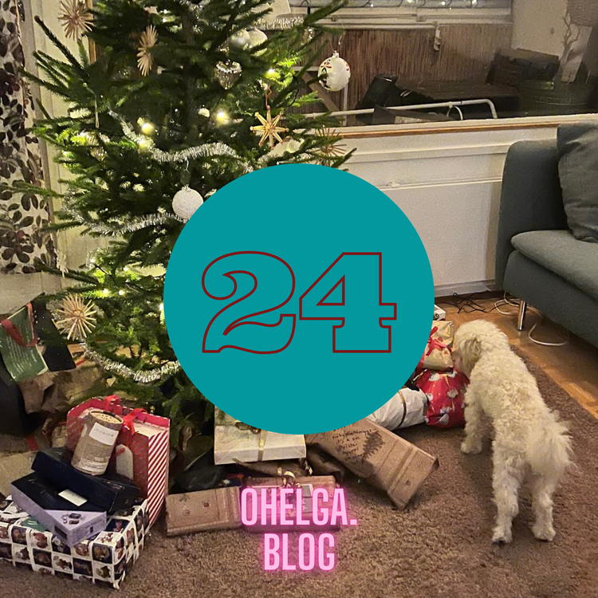

Herkkä, mahtava, kaunis ja täydellinen! En version där stämning samsas med storytelling. Vi önskar God Jul, Hyvää joulua, med den perfekta versionen. Täyskymppi, den får en tia!
Apple Music:
Spotify:

Herkkä, mahtava, kaunis ja täydellinen! En version där stämning samsas med storytelling. Vi önskar God Jul, Hyvää joulua, med den perfekta versionen. Täyskymppi, den får en tia!
Apple Music:
Spotify:
Kommentit / Kommentarer (3)
<p>Pur perfektion! Han sjunger så grant, med sådan passion och inlevelse, helt mödolöst klättrar han upp och ner för sångens toppar. Här finns dramatik och patina med de där kyrkklockorna som ackompanjerar, så juligt och stämningsfullt. En version att lyssna på om igen. Är det nåt som ska få en tia är det det här.Tack för en rolig podd och god jul! (Får man förresten önska sig versioner till säsong två? Jag saknade Mahalia Jacksons version, och Bill & Gloria Gaithers, och har ni hört Jarkko Aholas mjukmetalversion?)</p>
<p>Och herregud Nils Bechs version som finns i tv-serien Skam inte att förglömma! Den är ett tips!</p>
<p>Det ante mig att ni sparat Jussi till sist och nog är väl han ändå bäst. Han gick bort för många år sedan och ännu är hans röst något som omnämns ofta då det gäller "världstenorer". Jag gillar att ni lagt tid och arbete på denna blog. Måsen saknade Mahalia Jacksons version. Vi har Silent Night på CD och hennes version av den julsången är svårslagen. Nåt för nästa år? </p>